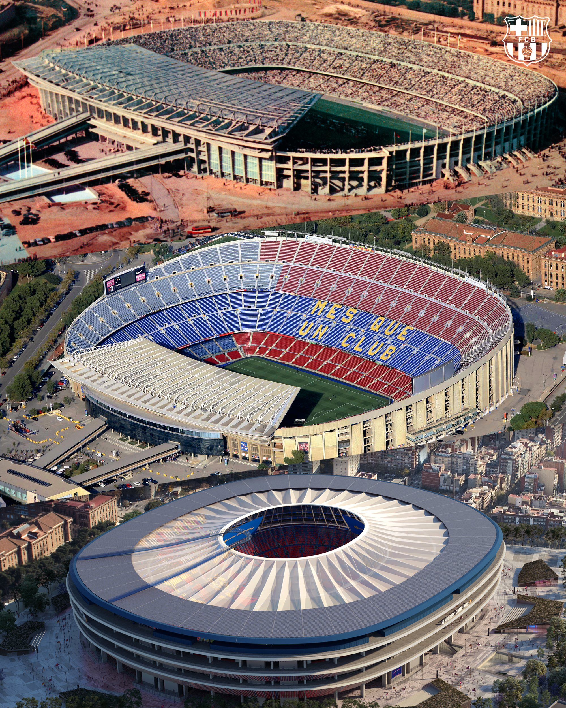
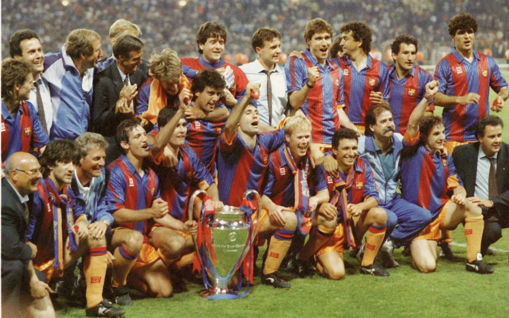
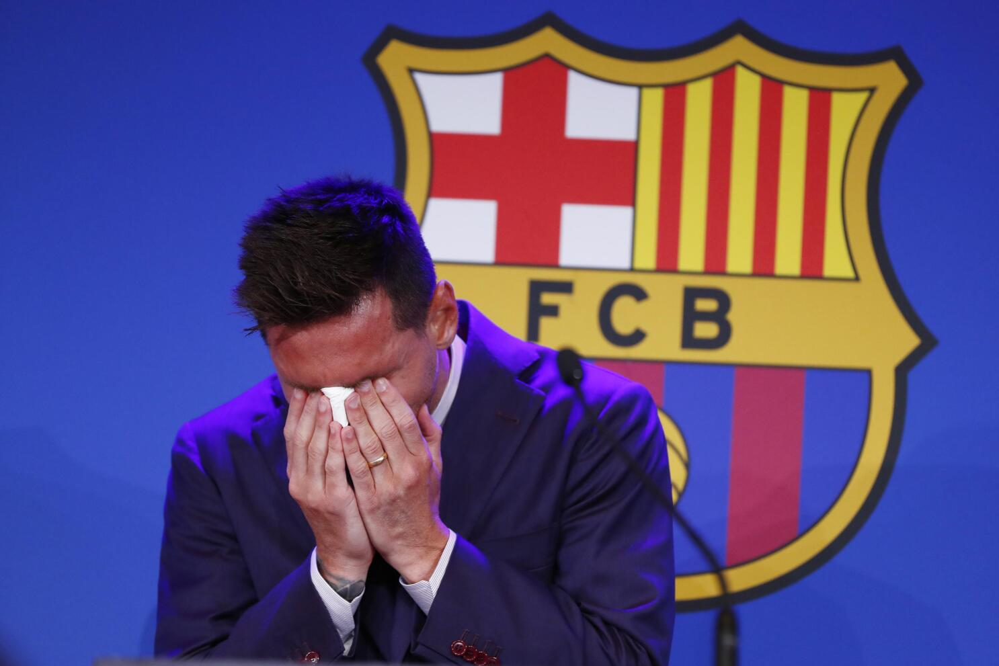
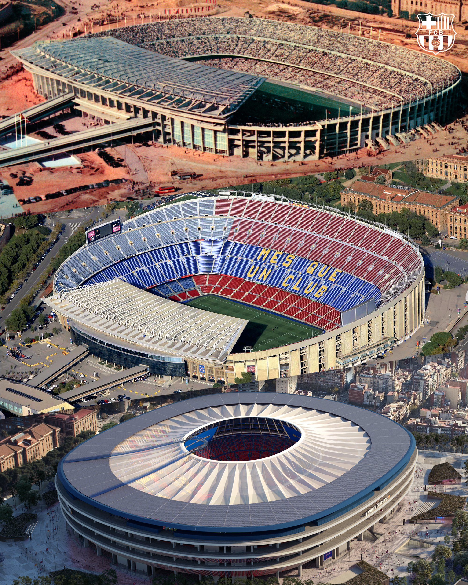
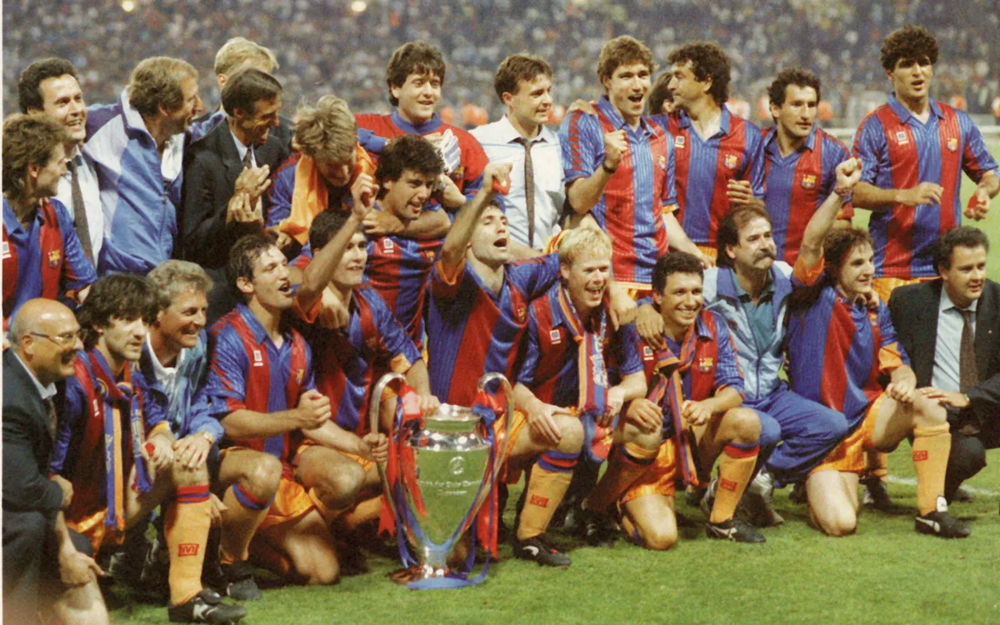
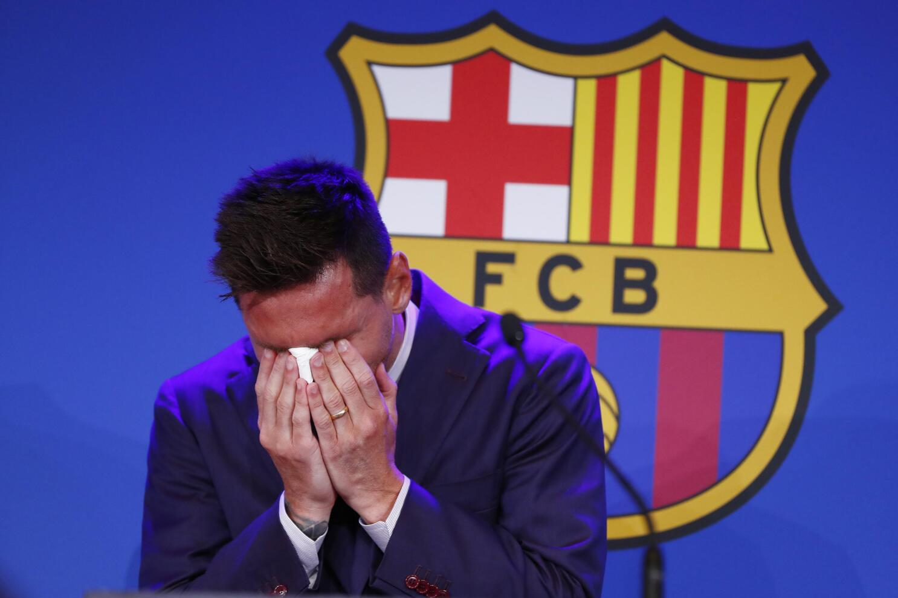
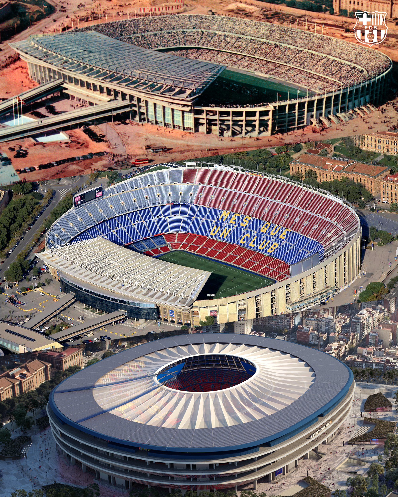
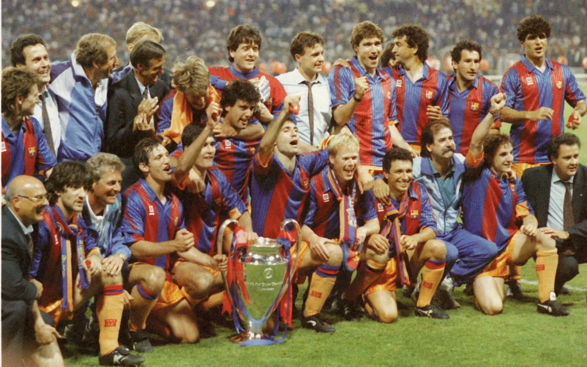
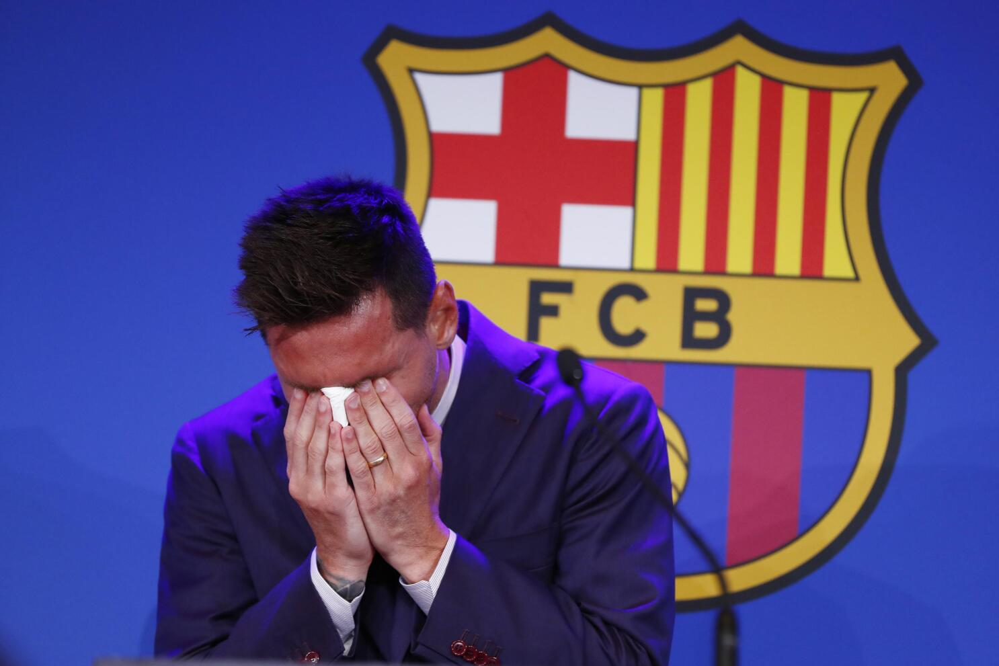

1929 : The team won the inaugral La Liga season (Spanish Championship)
1957 : The team moves to their current stadium, the Camp Nou.
1973 : Johan Cruyff joins the club, marking the start of a successful era for the club.
1992 : The club wins its first ever European title, under the management of Johan Cruyff.
2004 : Lionel Messi makes his first appearance for the club.
2009 : Barcelona become the first ever team to win 6 trophies in one calendar year
2021 : Lionel Messi leaves Barcelona after 17 years at the club.
2025 : Barcelona due to move to their newly-renovated stadium, Spotify Camp Nou
History in Photos



Interesting Facts about FC Barcelona
FC Barcelona is unique in that the club is fully owned by its members (the fans) who are known as Socis. They don't have an owner
that makes executive decisions. All decisions that are made by the elected president must be approved by the members.
Barcelona is known for their famous academy, La Masia which has created some of the best players in recent generations.
These include the likes of Lionel Messi, Xavi, Iniesta, Pique and many more. La Masia is widely recognized as the best footballing
academy in the world.
 




